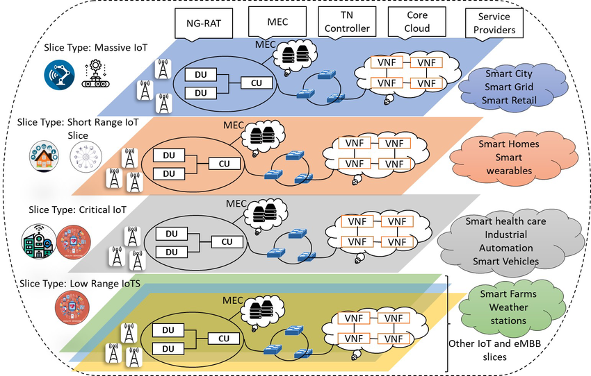
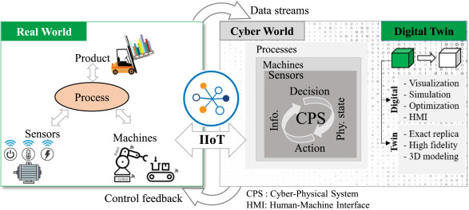

Research Areas
Industrial IoT
Our Industrial IoT research addresses communication, control, and trust in factory and mission-critical environments where OT meets IT. We design wireless stacks, resource allocation, and cyber-physical mechanisms that improve determinism, throughput, and safety under harsh interference and mobility, bridging shop-floor sensing/actuation with edge and cloud analytics. Representative themes include:
Industrial Wireless & Field Networks
Industrial WSNs, MAC and scheduling, channel access, and protocol design for reliable machine-to-machine traffic on the plant floor.
Deterministic & Low-Latency Communication
Latency-aware and channel-aware design—taming delay tails, supporting real-time loops, and coexistence with legacy industrial systems.
Digital Twin & Industrial CPS
Digital-twin-enabled monitoring, channel access, and power control; coupling virtual models with physical processes for smarter manufacturing.
Industrial Security & Resilience
Intrusion detection, adversarial robustness, attack indication, and privacy-preserving mechanisms tailored to industrial traffic and device constraints.
Localization & Asset Awareness
Indoor and field localization, Sybil and anomaly-oriented detection, and situational awareness for mobile assets and dense deployments.
Intelligent Edge & Automation
Agent-style intelligence at the edge—automation, adaptive policies, and coordination between controllers, AGVs, and heterogeneous industrial endpoints.
Recent Work
- Digital-twin-enabled frameworks and channel/power control for Industrial IoT
- Channel-aware latency and tail-taming techniques for industrial wireless
- Security, intrusion detection, and adversarial robustness in industrial IoT environments
- Industrial WSN protocols, localization, and Sybil-oriented detection
Ambient IoT

Our research on Ambient IoT targets networks of ultra-low-power, often battery-free devices that blend into the environment and operate at massive scale. We study how to enable reliable sensing and connectivity with minimal energy and spectrum use. A growing thread of our work is metamaterial passive IoT—using engineered electromagnetic surfaces and structures to passively modulate, steer, or sense RF without active radios, with emphasis on:
Ultra-Low Power & Harvesting
Energy harvesting, wake-up radios, and duty-cycled operation for long-lived or passive nodes.
Backscatter & Ambient RF
Backscatter communication, ambient backscatter, and RF-based sensing for tag-scale and sticker-scale devices.
Metamaterial Passive IoT
Metasurfaces and metamaterial-inspired passive front-ends for beam shaping, coding, and channel customization; integration with backscatter and ambient links for sticker- and surface-scale IoT.
Massive Deployment
Scalable access, coexistence with legacy systems, and coordination for dense ambient IoT deployments.
Recent Work
- Protocols and resource allocation for ultra-low-power ambient IoT links
- Backscatter and passive sensing techniques for large-scale monitoring
- Metamaterial passive IoT: passive RF surfaces and structures for enhanced backscatter, sensing, and coexistence
- Integration of ambient IoT with next-generation wireless and intelligent systems
Wireless Networking

Our research in wireless networking focuses on developing advanced technologies and protocols for next-generation networks. We investigate innovative solutions for improving wireless communication efficiency, reliability, and performance, with emphasis on:
Wireless Protocols
Development of advanced wireless communication protocols and standards.
Network Optimization
Research on wireless network optimization and performance enhancement.
Next-Gen Technologies
Investigation of emerging wireless technologies and their applications.
Recent Work
- Research on advanced wireless networking protocols
- Development of optimization techniques for wireless networks
- Investigation of next-generation wireless technologies
Intelligent Agents Communication and Networking

Our research in intelligent agents communication and networking focuses on developing advanced frameworks and protocols for agent-based systems. We work on improving communication efficiency and intelligence in distributed agent networks, with particular attention to:
Agent Intelligence
Development of intelligent communication strategies for autonomous agents.
Agent Networks
Research on multi-agent system architectures and protocols.
System Integration
Implementation of agent-based systems in real-world applications.
Recent Work
- Development of intelligent agent communication protocols
- Research on multi-agent system optimization
- Investigation of agent-based networking solutions